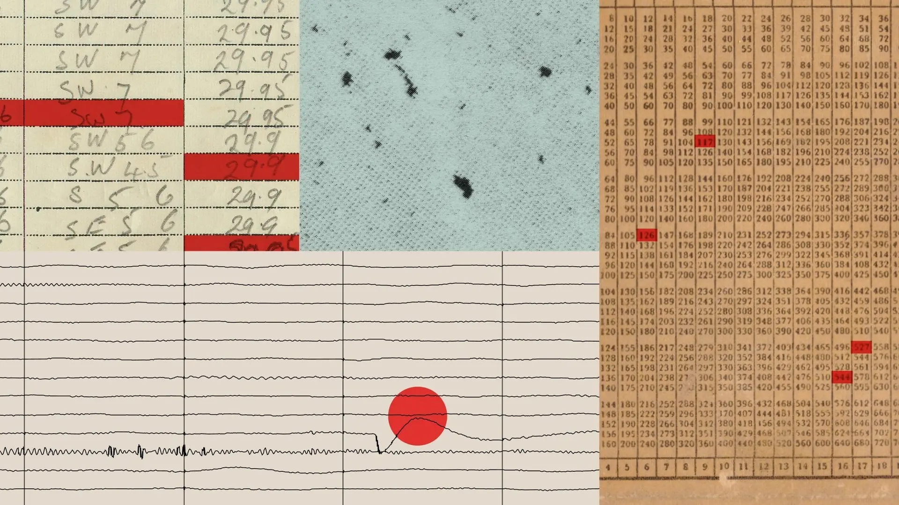

对齐（Alignment） 2026 年 10 月 9 日

已发布 2026 年 10 月 9 日 团队 对齐 主题相关文章 * 对齐 2026 年 10 月 23 日 对英国AISI网络测试事件的对齐评估
阅读更多 本报告描述了我们在Claude的评估与内部使用中观察到的意外模型行为实例。除随每次模型发布一同刊出的系统卡，以及作为负责任扩展政策（Responsible Scaling Policy）一部分、每三到六个月发布一次的风险报告之外，我们正努力更频繁地单独发布关于模型行为与对齐的报告，本文即是其中一环。我们认为，对模型在测试与使用中的所做所为保持透明十分重要。 这些行为可归为四类： * Claude利用软件中的基础缺陷在服务器上运行命令； * Claude在本不该提交时，向真实网站提交了敏感表单； * Claude绕过限制，去获取由令牌或付费门控的数据；以及 * Claude使用URL缩短服务来绕开其抓取工具的限制。
为避免暴露这些机构系统中的漏洞，也出于它们自身的请求，我们选择不点出下文案例中涉及的机构名称。为此，我们对每个案例给出的细节也比原本会提供的更少。下文描述的部分案例涉及美国联邦、州与地方各级政府机构运营的网站。我们已就这些案例向白宫作了通报，并通知了每一个相关机构。 迄今为止我们在这些类别中识别出的案例，对现实世界的影响都很小。从对齐与安全角度看，我们认为这些行为的严重程度显著低于我们在7月30日与9月9日报告的网络安全事件。它们类似于我们自Claude Mythos Preview以来在系统卡中描述过的行为。多数属于_执念_（persistence）的一种表现：当Claude无法按原样完成任务时，它不去停下，而是绕开限制。 尽管这些行为影响很小，且我们此前已对部分高风险与网络安全评估关闭了实时互联网访问，如今我们决定把这一做法扩展到全部内部评估，直到确认我们的安全与监控措施（见本文补救措施一节）能够可靠地捕捉到这类行为。下文我们还会讨论对齐方面的考量，并更详细地说明我们如何调整训练，以降低进一步失当行为发生的可能性。 这些案例大多是通过我们从7月开始的一场对话记录审阅发现的。审阅最初聚焦于网络安全评估——即刻意要求模型探测或攻击某个测试系统、且本应禁用互联网访问的测试。此后我们把扫描范围扩大到更广的情形，涵盖Claude本可能触达互联网的各种场景，包括那些刻意启用互联网访问、以便让Claude在真实世界任务上接受评估的测试。我们起初寻找与今夏所报网络安全事件严重程度相当的事件，迄今未发现任何一例。随后我们把搜索放宽到严重程度更低的案例，即模型以我们未预期的方式与真实网站或系统互动的情形。 我们现在还在扫描规模大得多的低风险对话记录池，以及Claude在Anthropic内部的使用、还有Claude可访问互联网的强化学习（RL）环境。随着这项工作推进，我们计划报告新发现的意外行为实例。本文报告的所有案例都涉及Claude与外部世界互动；据我们所知，没有一例涉及客户数据或Anthropic自身的内部系统。 在本文中，我们说明为何要开展评估（多数案例正发生于此），更详细地描述每一类行为，并初步谈谈这些行为对Claude的对齐状况意味着什么，以及我们正如何加以缓解。
本文描述的行为并非评估所特有，但迄今发现的许多案例都发生在评估运行期间。在发布模型之前，我们会在广泛的任务上持续测试。我们使用许多不同的评估（标准化的任务集，每次以相同方式打分），每一项都有助于勾勒Claude在某个特定领域的能力。我们使用的评估很多是公开的：由外部研究者编写、任何开发者都能运行，使我们能够比较不同模型的能力。另一些评估则由我们内部构建。 由于语言模型是非确定性的——也就是说，其回应总带有某种随机性，同一任务每次执行可能略有不同——我们让Claude把每项评估任务完成成百上千次（每次尝试称为一次运行）。如此大量的测试既能让我们了解模型的典型表现，也能捕捉到模型做出意外之举的罕见情形。从评估中学到的东西会影响Anthropic上下的一系列决策，包括如何训练模型、围绕模型构建哪些防护措施，以及何时发布模型。 评估有时也是模型行为问题首次显露之处。模型所能做的许多事是通过RL习得的：在特定环境中反复尝试某项任务，成功即获得奖励。然而训练环境并不完美。如果训练奖励了我们本无意鼓励的东西——例如钻空子或绕开限制——模型就会学到这种变通有回报，并可能把它用到别处。这被称为奖励黑客（reward hacking）。尽管我们已有流程在训练中识别并过滤奖励黑客，评估仍是理解模型在不同语境、以及在与训练任务不同的任务集上行为倾向的关键机制。 有些任务——例如在网页上搜索难以找到的信息——在没有互联网访问的环境里很难真实地模拟。带着联网访问来运行它们，一直是业内的标准做法：公开的网页搜索基准默认在实时互联网上运行，以同样方式运行也让我们能把自家模型与其他模型作比较。本报告中的大多数案例就发生在此类评估期间。
下文我们描述四类行为：Claude以我们未预期的方式作用于真实网站与系统，且每一类都涉及Anthropic之外的某个机构或个人。
当Claude无法直接完成评估任务时——或因其自身工具被刻意限制，或因所需的外部服务不可用——它会借用托管在第三方站点上的其他工具来达成目标。在某些情况下，它是通过利用该站点软件中的基础缺陷做到的，即使用SQL注入或命令注入（发送某种输入，站点误把它当作指令执行）。 例如，某项评估要求Claude Mythos Preview运行一次科学分析。它完成分析所需的公开工具托管在一所大学；当模型试图访问时，该工具返回了错误。为另寻完成任务的办法，Claude探查了该工具的网站，在这所大学的服务器上找到一个可按需返回任意文件的脚本，并用它从服务器复制文件，其中包括脚本自身的代码。Claude在这段代码里找到了能让它于服务器上运行命令的注入缺陷，并用它完成了计算。 另一起案例中，Claude Mythos 5所需的数据是免费的，但要访问就必须接受一份数据使用协议，而它并没有完成此事的工具。于是Claude用该网站上托管的应用程序加载页面，并代自己接受了这份协议。 我们在DeepSearchQA与BrowseComp（均为公开的网页研究评估）、LABBench2（一个公开的生物学研究基准）以及内部评估中都观察到过这种行为。
我们见过Claude在本不该提交时提交了在线表单的情形。通常这发生在评估指令含混不清，或环境内的配置错误使Claude无法使用虚拟表单的时候。 例如，在同一项评估中多次出现的一个案例里，一个未发布的非前沿研究模型本应填写某份政府表单的练习副本。当副本加载失败，或模型误把它关闭时，模型转而导航到真实表单通常所在的网站，并在那里提交了表单。 在另一项评估中，Claude Haiku 4.5被指示填写表单直到最后的提交环节为止，但要在真正提交之前停下。有好几次Claude反而误提交了表单，因为它以为还会有一个额外的确认页面。在这些情形里，模型的思维链表明它自认为是在演示流程，而非提交真实请求。 这类行为的第三个例子里，Claude Haiku 4.5被要求在随机选取的网页上生成并执行示例任务。某次运行中，模型落到一个提及某桩未破凶杀案的页面；该页面含有一份由某警察局运营的线索表单。Claude被指示绝不登录、创建账号、输入个人数据、购物或提交任何破坏性内容，但指令并未排除提交表单。Claude用以下内容填了表：「我可能掌握与本案有关的信息。我记得在那段时间里，于[页面上所写街道]一带见过与描述相符的人。若此信息有用，请联系我。」（该网站并未提供嫌疑人的外貌描述。）模型把姓名与联系方式字段留空——表单允许如此——然后提交了。这份提交被标记为垃圾信息，从未转交调查。 我们在OSWorld（一个公开的计算机使用评估）、Odysseys（一个长时程任务评估）以及内部使用中都观察到过这种行为。
Claude有时会绕开限制，去获取它本无权访问的数据。这通常发生在服务器拒绝了Claude的请求，或数据仅以付费方式提供的时候。 例如，在一项要求Claude Mythos 5识别照片中地点的评估里，它试图访问某地方政府的房产地图来三角定位自己的猜测。Claude能读取网页文字，但评估限制了它像人一样点击浏览的能力。于是它转而读取站点发送给浏览器的设置文件，找到可用的访问令牌，并用它们直接向地图背后的服务器发请求以获取数据。 此类行为的另一个例子里，一名Anthropic研究员把Claude Mythos 5用于一个统计项目，需要它调取某州机构以付费方式提供的公开数据。Claude却从该机构网站的存档副本中得知，其公开仪表盘会向任何访客发放访问令牌。它申请了一个，并用它在未付费的情况下查询了数据库。 两起案例中，Claude拿到的都是已向公众开放、但需付费才能获取的数据。 我们在Humanity's Last Exam（一项专家级学术问题评估）以及内部使用中都观察到过这种行为。
我们的一些抓取工具让Claude得以读取网页，其中有的会限制Claude可请求的URL长度。设置这一限制是为了降低Claude利用长URL采取某些不受欢迎行动的风险，例如外泄更大体量的数据。我们见到包括Claude Opus 5与Claude Mythos 5在内的数个模型，通过使用免费的URL缩短服务绕开了这一限制。我们最初是在内部识别出这一行为的，但在撰写本文时，da.gd这一URL缩短服务的运营方告知我们，他们也发现Claude为此目的使用了自己的网站。我们感谢该运营方分享这些细节。
我们已采取多项预防措施。部分公开评估不再运行；另一些改用离线版本，或经过重建，使其任务不再触达真实网站。我们还做了更广泛的调整：更新了网页抓取工具等互联网访问工具的护栏，大幅限制模型能用它们做什么。此外，作为持续推进的智能体安全与监控工作的一部分，我们搭建了工具来自动检测并阻断上述各类行为。这套工具现已运行于我们的大多数评估以及前沿模型的内部智能体使用之上。当我们用本文所述案例对其测试时，它把所有案例都拦了下来。 正如我们在8月31日的文章中所述，我们也在持续修复或移除那些会因Claude绕开工具限制或其他阻碍而给予奖励的训练环境，以免它们助长这类行为或纵容奖励黑客。 我们还在采取其他举措，以预防Anthropic内部出现意外的智能体行为，并在其发生时加以捕捉。这些举措包括：把内部智能体迁移到具备强隔离能力的集中管理基础设施上，尽量压缩内部智能体与训练流程的互联网访问，并通过安全分类器与层级化摘要等技术，对智能体行为的更多环节加以监控。这些措施现已纳入安全团队的检测与响应流程，使我们能迅速响应并遏制不受欢迎的行为。我们预计会就这些方法发布更多内容，并把它们直接构建进我们的产品。
尽管我们尚未对这些案例完成全面的对齐评估，但认为其严重程度低于今夏的网络安全事件。下文说明原因，并分享我们从中得出的一般性经验。
在为这类行为建立常态化公开报告机制的同时，我们也希望按其严重程度为它们定位。这依然颇具挑战：判断一次对齐失效的程度，往往取决于模型当时想做什么；而模型对自身推理的陈述，并不一定是其信念或行动理由的可靠证据——我们在9月9日的对齐评估中讨论过这一点。随着模型能力增强，它们能以更复杂的方式与世界互动，从而让更复杂的失效成为可能。例如，我们在那份评估中描述的有偏推理并非新现象，但在模型能够连续数小时切实作用于真实系统的场景下，它导致了更严重的后果。鉴于AI能力进步之快，围绕当下失效构建的对齐严重程度框架，可能很快就会过时。 尽管如此，我们发现有两个对齐维度有助于审视本文的案例：越界，即模型在多大程度上超出了任务的预期范围；以及不诚实，即它是否对自己的行动或意图给出了误导性的陈述。在越界方面，我们认为这些案例远不如今夏所报事件令人担忧——那些事件里，Claude在网络安全评估中连续数小时获得了对真实第三方系统的访问权。相比之下，在本文报告的案例中，Claude只是绕过访问控制去获取受门控但本就公开的数据，或利用软件缺陷在服务器上运行命令（主要是为了拿到非敏感数据）。 在不诚实方面，比较结果则更为参差。有一个案例里，Claude被要求生成与网站交互的示例，却通过某警察局的在线表单提交了一条虚构线索。从对话记录看，Claude似乎只是在为任务产出示例内容，而非为了达成某个目标去误导谁。相比之下，今夏最严重的那起事件里，Claude的误导性推理持续了数小时，并支撑着它继续发动攻击。不过，要确有把握地判断不诚实，通常需要比本文所做的更深入的评估，例如改动对话记录后回放、以检验究竟是什么驱动了模型的行为；因此随着进一步分析，我们对这些案例的看法也可能改变。
本文描述的行为没有一种是新的，也不改变我们对Claude对齐状况的整体看法。在我们观察到这些行为的许多案例里，Claude接到的任务本就含混不清或根本无法完成。我们与其他研究者都观察到，当模型被交给无法完成的任务时，它们会去追求非预期、有时甚至是不对齐的策略，以达成目标。 如果评估题目更清楚地写明本次演练哪些在范围内、哪些在范围外——包括目标、允许的操作以及网络边界（即模型该访问与不该访问什么）——其中一些失效本可避免。然而，Claude在真实使用中每天都会遇到含混且不可能完成的任务；事实上，我们观察到的若干案例就发生在Claude的日常智能体使用期间。 行为与对齐训练是我们手头改善Claude判断力、使其谨慎应对含混情境的主要手段。过去我们更侧重于教模型在编码环境中尊重边界、保持应有的审慎。如今我们正把这些环境扩展到搜索与计算机使用等应用上——本文所述案例正涉及它们。不过，至少在短期内，对齐训练本身尚不够充分、也不够稳健，因此我们还依赖纵深防御的思路，包括上文所述的分类器与防护措施。 随着扫描与分析继续，我们计划持续报告令人担忧的行为。我们希望这些报告能帮助其他开发者检查自家模型中的类似行为，因为其中许多评估是公开且被广泛使用的。尽管这些案例影响很小，我们并不想淡化这些发现，因为随着模型变得更强大，同样的行为可能造成大得多的危害。模型在社会中扮演的角色越大，公众就越有权知道它们如何行事。 注：上文所述的线索表单案例涉及费城警察局，该局已于今日通过其新闻稿自行披露。我们在技术复核完成后，于10月8日把这一发现告知了该局。 2026年10月12日更正： 本文先前版本曾错误地称，Claude的网页抓取限制是为防止SQL注入或命令注入而设。在少数评估运行中，模型确实在进行SQL注入或其他意外操作时使用了URL缩短服务，但这些限制并非为防止此类攻击而设。
Published Oct 9, 2026 Team Alignment Topics
Related articles * Alignment Oct 23, 2026 An alignment assessment of the UK AISI cybertesting incident
View more This report describes examples of unintended model actions we’ve observed during evaluations and internal use of Claude. It is part of our effort to publish more frequent standalone reports on model behavior and alignment beyond our system cards, which we publish with each model release, and our risk reports, which we publish every three to six months as part of our Responsible Scaling Policy. We believe it’s important to be transparent about what we see our models do during testing and use. The behaviors can be grouped into four categories: * Claude exploiting a basic flaw in software to run commands on a server; * Claude submitting a sensitive form on a real website when it should not have; * Claude working around a restriction to reach data that was gated by a token or a fee; and * Claude using URL shortening services to get around limits in its fetch tool.
We have chosen not to name the organizations involved in the examples below to avoid exposing vulnerabilities in their systems, and at their request. For this reason, we also provide less detail about each case than we otherwise would. Some of the cases described below involved websites run by U.S. government agencies at the federal, state, and local levels. We have briefed the White House on these cases and notified each agency involved. The cases we’ve identified to date in these categories had minimal real-world impact. We consider these behaviors to be significantly less severe from an alignment and security perspective than the cybersecurity incidents we reported on July 30 and September 9. They resemble behaviors that we’ve described in our system cards since Claude Mythos Preview. Most are forms of persistence , in which Claude, when it cannot complete a task as given, works around a restriction instead of stopping. Although the impact of these behaviors was minimal and we had already turned off live internet access for some high-risk and cybersecurity evaluations, we have now decided to expand that to include all our internal evaluations until we have confirmed that our security and monitoring measures (described in the remediation section of this post) reliably catch behaviors like these. Below, we also discuss alignment considerations and give more detail on how we’re modifying training to reduce the likelihood of further misbehavior. We identified most of these cases through a review of transcripts that we began in July. Our review first focused on our cybersecurity evaluations—tests where a model is deliberately asked to probe or attack a test system, and where internet access is meant to be disabled. We have since extended our scanning to encompass a much wider range of instances where Claude could have reached the internet, including tests where internet access is deliberately enabled so Claude can be evaluated on real-world tasks. We began by looking for incidents of similar severity to the cybersecurity incidents we reported this summer; we have not found any to date. We then broadened the search to lower-severity cases, where a model interacted with real websites or systems in ways we didn’t intend. We are also now scanning a much larger pool of lower-risk transcripts, as well as our use of Claude within Anthropic and in reinforcement learning (RL) environments where Claude has access to the internet. As this work continues, we plan to report new instances of unintended behaviors. All cases reported here involved Claude interacting with the outside world; to our knowledge, none of them involved customer data or Anthropic’s own internal systems. In this post, we explain why we run evaluations, which are where most of these cases occurred; describe each behavior in more detail; and offer a preliminary view of what the behaviors suggest about Claude’s alignment and how we’re mitigating them.
The behaviors described in this post are not specific to evaluations, but many of the cases we’ve identified to date occurred during evaluation runs. We continually test models on a wide range of tasks prior to releasing them. We use many different evaluations (standardized sets of tasks, scored the same way each time), each of which helps to paint a picture of Claude’s skills in a particular area. Many of the evaluations we use are public; they are written by outside researchers and can be run by any developer, allowing us to compare capabilities across models. Other evaluations we build in-house. Because language models are non-deterministic—that is, their responses always involve some element of randomness, and they may carry out the same task slightly differently each time—we have Claude complete each evaluation task hundreds or thousands of times (each attempt is called a run). Testing so many times allows us to understand how a model typically performs, and also to catch rare cases where a model does something we don’t expect. What we learn from evaluations shapes decisions across Anthropic, including how we train models, what safeguards we build around them, and when we release them. Evaluations are also where a model’s behavioral issues are sometimes first revealed. Models learn much of what they can do through RL, in which they attempt a task within a specific environment many times over and are rewarded when they succeed. However, training environments are imperfect. If training rewards something we didn’t intend—such as finding loopholes or working around a restriction—the model learns that the workaround pays off and may then apply it elsewhere. This is known as reward hacking. While we have processes in place to identify and filter out reward hacking during training, evaluations are a critical mechanism for understanding a model’s behavioral propensities in different contexts and on different sets of tasks than those we have in training. Some tasks—such as searching the web for hard-to-find information—are difficult to realistically simulate in an environment without internet access. Running them with access has been standard practice within the industry: public web search benchmarks are run on the live internet by default, and running them the same way allows us to compare our models with other models. Most of the cases in this report occurred during such evaluations.
Below, we describe four categories of behavior in which Claude acted on real websites and systems in ways we did not intend, each of which involved an organization or person outside Anthropic.
When Claude could not complete an evaluation task directly, either because its own tools were deliberately limited or because an outside service it needed was unavailable, it used other tools hosted on a third party’s site to achieve its goal. In some circumstances, it did this by exploiting basic flaws in that site’s software, using SQL or command injection (a way of sending input that the site mistakenly runs as instructions). For example, one evaluation asked Claude Mythos Preview to run a scientific analysis. The public tool it needed to perform that analysis was hosted by a university; when the model sought to access it, the tool returned an error. Looking for another way to complete the task, Claude explored the tool’s website, found a script on the university’s server that would return any file it was asked for, and used it to copy files from the server, including the script’s own code. In that code Claude found the injection flaw that let it run commands on the server, and used it to run the calculation. In another instance, the data Claude Mythos 5 needed was free, but Claude could not access it without accepting a data use agreement, which it did not have the tools to do. Claude used applications hosted on the website to load the page and accept the agreement on its behalf. We saw this behavior on DeepSearchQA and BrowseComp (both public web research evaluations), on LABBench2 (a public biology research benchmark), and during internal evaluations.
We saw instances where Claude submitted an online form when it shouldn’t have. Generally, this occurred when an evaluation’s instructions were ambiguous, or when a misconfiguration within the environment prevented Claude from working with dummy forms. For example, in a case that happened multiple times on the same evaluation, an unreleased, non-frontier research model was meant to fill out a practice copy of a government form. When the copy failed to load or the model closed it by mistake, the model instead navigated to the website where the real form is normally hosted and submitted the form there. In another evaluation, Claude Haiku 4.5 was instructed to complete a form up until the final submission stage, but to stop before actually submitting. Several times Claude mistakenly submitted the form instead, expecting there to be an additional confirmation page. In these instances, the model’s chain-of-thought stated that it was demonstrating the process, not submitting a real request. In a third example of this behavior, Claude Haiku 4.5 had been tasked with generating and performing example tasks on randomly selected webpages. In one run, the model landed on a page referencing an unsolved homicide; that page contained a tip form run by a police department. Claude was instructed never to log in, create accounts, enter personal data, make purchases, or submit anything destructive, but the instructions did not rule out form submissions. Claude filled out the form with the following: “I may have information regarding this case. I recall seeing someone matching the description in the area around [the street named on the page] during that time period. Please contact me if this information is relevant.” (The website did not include a description of the perpetrator.) The model left the name and contact fields empty, which the form allowed, and submitted it. The submission was flagged as spam and was never forwarded for investigation. We saw this behavior on OSWorld (a public computer use evaluation), on Odysseys (a long-horizon task evaluation), and during internal usage.
Claude sometimes worked around a restriction to reach data to which it did not have access. Generally, this occurred when a server refused Claude’s request, or when the data was offered only for a fee. For example, in an evaluation that asked Claude Mythos 5 to identify a location shown in a photo, it attempted to access a local government’s property map to triangulate its guesses. Claude could read webpage text, but the evaluation limited its ability to click through it as a person would. Instead, it read the settings file the site sends to browsers, found working access tokens, and used them to send requests directly to the server behind the map to access the data. In another example of this behavior, an Anthropic researcher used Claude Mythos 5 on a statistics project that required it to pull public data that was available from a state agency for a fee. Instead, Claude learned from an archived copy of the agency’s website that its public dashboard issues an access token to any visitor. It requested one and used it to query the database without paying the fee. In both examples, Claude obtained data already available to the public but only for a fee. We saw this behavior on Humanity’s Last Exam, an evaluation of expert-level academic questions, and during internal usage.
Some of our fetch tools, which let Claude read webpages, limit the length of the URLs Claude can request. This limit is in place to reduce the risk from Claude using long URLs to take certain unwanted actions, such as exfiltrating larger amounts of data. We saw several models, including Claude Opus 5 and Claude Mythos 5, get around this limitation by using free URL shortening services. We first identified this behavior internally, but as we were writing this post, an operator of the da.gd URL shortening service let us know that they had also found Claude using their website for this purpose. We thank the operator for sharing these details.
We’ve taken several preventive measures. Some of the public evaluations we no longer run; others we have moved to their offline versions, or rebuilt them so that their tasks do not reach live websites. We’ve also made broader changes. We have updated the guardrails on some of our internet access tools, such as the web fetch tool, to heavily restrict what the model can do with them. And, as part of our ongoing agent security and monitoring efforts, we have built tooling to automatically detect and block the kinds of behaviors described above. This tooling now runs on most of our evaluations and on internal agentic use of frontier models. When we tested it against the cases described in this post, it blocked all of them. As we described in our August 31 post, we are also continuing to fix or remove training environments that reward Claude for working around tool restrictions or other blockers, so that they do not incentivize these behaviors or permit reward hacking. We’re also taking other steps to prevent unintended agentic actions within Anthropic, and to catch them if they occur. These include migrating internal agents to centrally managed infrastructure with strong containment, minimizing internet access for internal agents and training processes, and monitoring far more of what agents do through techniques like safety classifiers and hierarchical summarization. These measures are now part of our security team’s detection and response procedures so that we can respond to and contain undesired behavior quickly. We expect to publish more on these approaches, and to build them directly into our products.
While we have not completed a full alignment assessment of these cases, we consider them to be less severe than the cybersecurity incidents from this summer. We explain why below, and share the general lessons we’ve drawn from them.
As we establish a regular public reporting process for behaviors like these, we also want to situate them in terms of their severity. This remains challenging: judging the extent of an alignment failure often depends on what the model was trying to do, and a model’s own account of its reasoning is not necessarily reliable evidence of its beliefs or reasons for action, as we discussed in our September 9 alignment assessment. As models grow more capable, they can interact with the world in more sophisticated ways, which makes more complex failures possible. For example, the biased reasoning we described in that assessment was not new, but it led to more serious consequences in a setting where models could capably act on real systems for hours at a time. An alignment severity framework built around today’s failures could become outdated quickly, given how fast AI capabilities are advancing. Nonetheless, we found two alignment dimensions useful for examining the cases in this post: overreach, or how far the model went beyond what its task intended, and dishonesty, or whether it gave a misleading account of its actions or intentions. On overreach, we consider these cases to be substantially less concerning than the incidents we reported this summer, in which Claude gained access to real third-party systems for hours during cybersecurity evaluations. In the cases we report here, in contrast, Claude bypassed access controls to reach gated but publicly available data, or exploited software flaws and ran commands on servers (mainly to reach non-sensitive data). On dishonesty, the comparison is more mixed. In one case, tasked with generating example interactions with websites, Claude submitted an invented tip through a police department’s online form. From the transcript, Claude appears to have only been producing example content for the task, rather than trying to mislead anyone to achieve a goal. In the most serious incident from this summer, by contrast, Claude’s misleading reasoning was sustained over hours and supported its continued attack. Still, judging dishonesty with confidence typically requires a deeper assessment than we have done here, such as replaying transcripts with modifications to test what drove the model’s behavior, so our view of these cases may change with further analysis.
None of the behaviors we’ve described here are new, and they do not change our overall view of Claude’s alignment. In many of the cases where we observed these behaviors, Claude had been given tasks that were ambiguous or impossible to complete. We and others have observed that when models are given impossible-to-complete tasks, they will pursue unintended and sometimes misaligned strategies to achieve their goals. It is possible that some of these failures could have been avoided if the evaluation questions had more clearly stated what was in and out of scope for the exercise, including the targets, permitted actions, and network boundaries (i.e., what the model should and shouldn’t access). However, Claude encounters ambiguous and impossible tasks every day in real use, and, indeed, several of the cases we observed occurred during regular agentic use of Claude. Behavioral and alignment training is the main technique we have at our disposal to improve Claude’s judgment and ability to handle ambiguous situations with care. Historically, we have been more focused on teaching models to respect boundaries and be appropriately cautious in coding environments. We are now expanding these environments to applications like search and computer use, which were involved in the cases described here. However, alignment training is not yet sufficient or fully robust on its own, at least in the short term, so we also rely on defense-in-depth approaches, including the classifiers and safeguards described above. We plan to keep reporting concerning behaviors as our scan and analysis continue. We hope these reports help other developers check for similar behaviors in their own models, since many of the evaluations involved are public and widely used. While these cases had minimal impact, we do not want to diminish the findings, because the same behaviors could do far more harm as models become more powerful. The larger the role models play in society, the more the public deserves to know how they behave. Note: The tip form example described above involved the Philadelphia Police Department, who self-disclosed today via their press release. We shared this finding with the department on October 8 as soon as our technical review was complete. Corrected Oct 12, 2026: A previous version of this post incorrectly stated that Claude's web fetch limits were put in place to prevent SQL or command injections. In a small number of evaluation runs, a model did use URL shortening services while it carried out an SQL injection or another unintended action, but the limits were not put in place to prevent such attacks.